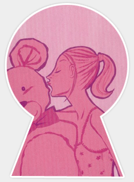
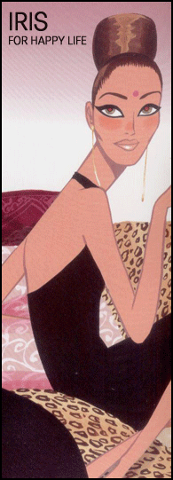
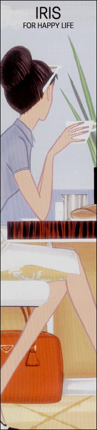

|
|
|
 |

 마취: 전신마취
수술시간: 약 1시간
입원 : No
마취: 전신마취
수술시간: 약 1시간
입원 : No |
|
|
|
아래턱이 커보이는 원인은 여러가지가 있습니다.
하악각 측방 비후, 하악각 후방 비후, 하악각 복합(측방 & 후방) 비후,
교근(저작근) 비후형 하악골 전반적인 비후등의 경우입니다.
하악골은 정면과 측면 각각 방향을 달리하여 뼈를 잘라냅니다.
측면에서의 과교정은 수술한 티가 많이 나서 부자연스러운 인상을 줍니다.
수술방법이 많이 세련되진 요즘은 예전처럼 수술후 부기와 멍이 많지 않습니다.
수술후 통증과 부기와 멍은 뼈를 깍아서 생기는것이 아닙니다.
뼈를 둘러 싸고 있는 골 막이 손상되기 때문입니다.
골막의 손상을 줄이면서 수술할 수 있다면 수술 후 회복은 매우 빠릅니다.
바로 이점이 중요합니다. 좀더 편안한 마음으로 안면윤곽을 받으시기 바랍니다.
뼈를 잘라내면 저작근은 스스로 줄어드는 효과가 있습니다.
저작근만이 비후된 경우 정면에서 특히 얼굴이 넓어보이게 되는데 보톡스 주사로 감소 시킬수
있습니다.
정면에서 볼 때 턱이 많이 갸름해집니다. 뼈를 깍는 것에 대한 두려움이 있으시다면.
보톡스 주사요법으로 간단하게 갸름해 질 수 있으나. 일년 정도 유지되어 다시 재 주사를
맞아야 하는 단점이 있습니다.
| |
광대뼈
돌출 (인상이 사나워 보여요!) - 네모난 얼굴 |
|
|
|
| |
마취: 전신마취
수술시간: 약 1시간 30분
입원 : No |
|
|
|
광대가 돌출되어 있다고 하는 분들은 크게
㉠ 주로 앞광 대가 나오신 분
㉡ 주로 옆 광대가 나오신 분
㉢ 앞 광대와 옆 광대가 모두 나오신 분
나누어 볼 수 있는데, 앞 광대는 주로 깎아서 없애는 부분이,
옆 광대는 주로 절골과 위치이동을 통해 줄여 주는 부분입니다.
이 때 앞 광대를 너무 편평하도록 줄이면 얼굴의 윤곽이 너무
밋밋해져서 얼굴이 더 넓적한 이미지로
보이고 매력 또한 감소될 수 있습니다.
반면에 옆 광대의 경우에는 충분히 줄여주는 것이 좋습니다. |
 |
|
사람의 얼굴은 모두들 좌우가 조금씩 다른데, 광대뼈의 경우 대개 한 쪽은
앞 광대가,
다른 한 쪽은 옆 광대가 더 큽니다.
수술을 하시게 되면 수술 전에 있는 비대칭을 교정하기 위해 축소할 양을 조절하게
되므로
수술전보다 비대칭이 좋아지게 됩니다만, 수술에 의해서 좌우를 완전히 똑같이
만들 수는
없습니다. 이는 본래의 두개골 자 체의 모양과도 관련이 있기 때문인데, 그러나
수술 후에는
어쨌든 비대칭이 많이 교정됩니다. |
→ 접근방법 : 구강내 절개 vs.
두피절개
-->광대뼈와 함께 귀족수술을 하면 훨씬 얼굴의 입체감에 더 효과적입니다.
-->얼굴의 균형을 감안하여 턱축소술이나 융비술을 함꼐하는 경우에 더 좋은 효과가
있습니다.
| |
무
턱(남들에게 나의 인상을 바로 각인 시키자!!) |
사회의 분위기와 턱끝의 상관관계는 있다고 봅니다.
여성의 사회적인 위치가 중요시되지 않던 예전에는 턱이 작고 턱이 앞으로 나온것을 좋아하지
않았습니다.
사회의 분위기가 진취적으로 되고 여성의 사회진출이 원활하게된 최근 선호하는 얼굴은
턱이 약간 돌출된
모양을 선호하게 된 듯 싶습니다.
턱이 뒤로 들어간 경우 답답한 인상을 주며 입이 돌출되어 보여 최근 많이 증가된 수술이
턱끝확대술 및
턱끝돌출수술 입니다.
재료는 자신의 뼈를 이용한 절골법,실리콘을 이용한 확대,고어텍스를 이용한 턱끝 성형술이
있습니다.
수술방법 중 절골술은 전신마취로 수술합니다. 고어텍스나 실리콘 삽압술은 국소마취로
비교적 간단한
수술입니다.
수술은 입안으로만 하며 흉터가 남지 않습니다.입안을 절개하여 자신을 뼈를 이용하여
돌출시키거나
실리콘이나 고어텍스를 이용하여 수술하게 됩니다.
수술후 2-3주간은 아랫입술의 감각이 떨어집니다만 신경이 수술시 당기어 발생하는 일이며
곧 회복되므로
걱정하지 마시고 기다리시면됩니다.
부기와 멍은 1주 정도 갑니다만.개인차에 따라 더 빨리 빠지거나 늦게 빠질수 있습니다.
입안을 청결히 하시고 가그린을 자주하시는것이 좋습니다. 턱에 스폰지와 종이 테이프를
5일정도 붙여
부기를 빨리 빠지게 합니다.
이런 경우는 턱이 없어서 뾰족하게 하는 경우가 아니라 어느 정도 턱의 볼륨은 있으나
턱의 앞부분이 너무 각이 져 보이거나 넓어 보이는 것은 특히 여성의 얼굴에서는 잘
어울리지 않습니다.
이런 경우 턱의 앞부분을 뾰족하게 만들어줄 수 있습니다.
수술은 각이 지거나 넓은 부분을 직접 줄여주면서 턱의 옆 부분과 라인을 맞추어주는
방법으로 이루어집니다.
얼굴에 있어서 이마의 중요성
이마는 인상을 크게 좌우하고 그 사람을 엿볼 수도 있게 해줍니다.
이마의 주름이 많다면 그 사람의 나이가 많다고 쉽게 알 수 있고, 미간의 주름이 많다면
인상을 찌푸린 일이 많거나 우울한 사람일 가능성이 많습니다.
이마가 좁고 꺼져있으면 인상이 밝아 보이지는 않습니다. 주름이 없고 적당히 튀어나온 이마가
보기에도 좋고 얼굴도 더 젊어 보입니다.
이마 성형
* 이마의 윤곽을 개선하는 수술.
* 이마의 주름을 펴는 수술.
|
첫째.
실리콘을사용해 이마 윤곽을 개선 이마의 윤곽을 개선하는 수술은 이마를 동그랗게
나오게 하는 수술입니다.
그 재료는 여러가지가 있습니다. 본인이마의 본을 떠 석고 모형을 만들고
이를 바탕 으로 맞춤 형태로 실리콘 판을 제작, 적용하고 있어 들뜨는 부분이
없고 모양도 원하 는데로 할수 있어 만족도가 더 높아 졌습니다.
둘째.
인조뼈, 고어텍스를 사용하는 방법으로 인조뼈(하이드록시아파타이트)를 이용할
수도 있습니다.
실리콘판을 원치 않는 사람이라면 고가이긴 하지만 사람의 뼈와 비슷한 성분인
인조 뼈(진주 추출물)를 곱게 갈아서 밀가루 반죽처럼 해서 이마 뼈위에
펴서 깔아주면 영 구히 흡수나 변형될 위험성이 없습니다.
고어텍스는 상당히 고가 이지만 경계 부위의 처리만 잘하면 좋은 재료로 사용할수
있습니다.
셋째.
자기 지방을 체취하여 이를 원심 분리하여서 이를 이마에 주입하는
시술로서 최근 많이 시행하는 방법이며 본인의 조직을 이용한다는 점에서 상당히
호응이 높은 방법 입니다.
수술은 머리로 가리는 부위로 수술하므로 수술 후 흉터가 보이지 않습니다만
실을 뽑기까지 1주-10일정도는 머리를 감기 힘듭니다.
부기와 멍은 2,3일간은 심하며 눈가로 내려오면서 빠지게 됩니다.
따라서 눈가에 부기와 멍이 들게됩니다. 눈동자 흰 부분도 빨간 멍이 드는
수도 있습니다만 멍이 퍼져서 그런것 이므로 눈에는 이상이 없습니다.
이들 멍과 붓기는 1주면 다 사라지는 것이 보통입니다 예전에 이마 수술후
이마가 꿀렁거리는 현상이 간혹 발생하였지만 최근에는 수술 시 출혈이 거의
없어 그런 현상은 거의 생기지 않습니다.
|
 |
콧구멍 옆에서 시작하는 8자 모양의 함몰된 주름은 나이가 들어 보이는 원인이 되기도
하며 어딘지 모르게 초췌한 인상을 주게 되며 입이 더 나와 보이게 하는 원인을 제공하
게 됩니다.
귀족수술을 하면 궁핍해보이지 않고 귀족 같이 된다고 하여 귀족수술 이라 부르게 되었습니다.
귀족수술의 교정방법으로는 주사요법 및 보톡스 주사, 인조뼈 삽입술, 고어텍스, 실리콘,메드포어
삽입술등이 있습니다.
주사요법은 함몰이 심한 경우 이를 극복할 수 없어 권장할만하지 못하며 비용면에서도
주사보다는 수술이 경제적입니다.
예전에 시행되던 인조뼈 삽입술은 수술 후 겉에서 딱딱하게 만져지며 조금만 위치가 어긋나도
외관상 큰 문제를 야기하게 됩니다. 최근 고어텍스라는 부드러우면서 생체친화성이 높은
이유로 선호되고 있습니다.
귀족수술시 가장 중요한 것은 삽입하는 고어텍스의 모양입니다. 누구나 같은 모양을 넣는
것은 수술 후 원숭이 같거나 부자연스러운 원인이 됩니다.
각자의 안면윤곽선에 적합한 고어텍스를 제작 하는 것이 중요합니다. 수술 후 2,3일간은
붓게되며, 그후 일상 생활에는 지장이 없습니다.
수술후 약 2-3주 간은 웃을때 윗입술이 덜 올라가 활짝웃는 모습이 어색할수 있으나
곧 회복되므로 걱정하실 필요는 없습니다. 입안으로 수술하am로 흉터가 남지 않으며
특별한 소독은 필요 없으나 입안을 항상 청결히 유지하셔야하며 자주 물을 마시고 가그린으로
자주 입을 행구시는 것이 좋습니다.
두바늘씩 입안으로 봉합을 하는데 녹는 실이므로 수술후 병원에 오시지 않으셔도 됩니다.
| |
잇몸돌출증
(뻐드렁니, bimaxillary protrusion,) |
잇몸이 돌출 되어 보이는 경우는 치조골이 전방으로 돌출된 경우와 웃을 때 과도한 윗입술의
운동으로
잇몸이 노출되는 경우로 나누어 집니다.
→ 치조골
돌출입의 교정으로 각각 죄우측의 치아를 뽑은후 전방부분의 치조골의 포함한 뼈를 절골하여
후방으로 밀어 넣어 고정하는 방법입니다.
치아의 방향이 앞으로 기울어진 뻐드렁니의 경우는 수술보다는 교정치료가 좋습니다.
→ 잇몸노출증
윗입술의 과도한 운동이 원인인 경우로 웃을때 경박하게 보인다하여 교정을 원하는 분이
많습니다. 웃을때 잇몸이 1-2mm정도 보이는 것이 가장 적당하며 그 이상 잇몸이
노출되는 경우 교정을 요합니다.
교정방법으로는 수술과 주사요법이 있습니다. 수술은 입안으로 입술을 올리는 근육을 잘라주는
방법이고 주사는 보톡스 주사로 입술을 올리는 근육을 약화시키는 방법입니다.
상악골의 길이와 하악골의 길이를 비교하여 각각 짧게 하거나 어느 한편을 줄이는 수술을
합니다.
* 하악골의 길이 단축은 턱 전체와 턱끝 부분으로 나누어 수술하는데 보통 간단히 턱끝
부분을 수술하는
경우가 많습니다.
* 짧은 얼굴의 경우 주로 상악보다는 하악의 길이를 조절하는 것이 수월합니다.
무턱교정과 함께 시술하는
것이 보통입니다.
 |
수술
후 뼈가 시린가요?
특히 나이가 든 후에 그렇지 않을까 하고 생각하시는 분들이 있는데, 나이 드신
분들께서 뼈가 시리다고 하시는 부분은 사실은 관절부위입니다. 윤곽수술을 하더라도
수술부위에 전혀 관절이 포함되어 있지 않기 때문에, 뼈를 수술하신다고 해서
시리거나 하는 일은 없습니다.
혹자들은
뼈를 깍는 고통이라고 하던데?
뼈 자체에는 신경이 분포되어 있지 않으며, 그 뼈에 도달하기까지 지나가는 점막이나
골막에만 신경이 있습니다. 그러므로, 뼈를 수술한다고 해서 통증이 다른 수술들보다
더 크지 않습니다. 실제로 윤곽수술은 수술후의 통증이 적은 편에 속하는 수술입니다.
수술
후 입이 안 벌려질 수 있나요?
수술 후에 입이 잘 안벌어지는 것은 붓기와 수술 과정에 의해 모두 생길 수
있습니다.
입이 잘 안 벌어지는 것이 회복되지 않는 경우는 없습니다.
광대뼈
수술 후 볼처짐이 생겼다는데 어떤 경우에 생기는 것인가요?
광대뼈 축소수술을 입 속으로 하는 경우에서 나이가 많으신 분이나,
볼에 살이 많으신 분은 볼쳐짐이 생길 수 있습니다.
하지만, 대부분의 분들에서는 입 속으로 수술을 해도 볼이 쳐지지 않습니다.
사각턱
수술했는데 옆에서 보면 갸름한데 앞에서 보면 똑같아요?
사각턱수술의 가장 큰 목적은 앞에서 볼 때 얼굴이 갸름해 지는 것이며, 오히려
옆모습은 약간의 각이 남아 있는 것이 더 자연스러워 보입니다. 그러므로, 수술에
있어서 이런 모양이 되도록 수술을 하여야 할 것입니다. 이렇게 수술이 된다면,
앞모습에서 더 많은 변화를 보실 수 있게 됩니다.
수술
후 뼈가 자란다고 하는데 왜 그런가요?
턱뼈를 감싸고 지나가는 저작근육의 종지부가 변화하면서 실제로 붓기가 빠지는
동안에 근육의 두께도 줄어듭니다. 수술 후 오랜 시간이 경과하였는데 각이 진다면
근육이 발달하는 것이지 뼈가 자라나는 것은 아닙니다.
경락하면
얼굴이 작아진다고 하는데, 정말인가요?
경락으로 얼굴이 작아진다고 하는 것은 의학적으로 전혀 근거가 없으며, 이와
관련된 학 문적 연구가 존재한 적도 없습니다. 시중에서 이말에 혹한 고객분들도
많더군요,,,
절대로 작아지지 않습니다. 만약 이에 관해 의학적인 근거를 댈 수 있다면 노벨
의학상도 받을 수 있겠군요. |

- 나이가 많으신 분들은 혈압이 높은지 검사합니다.
- 아스피린, 비타민 E 등 지혈에 영향을 주는 약물은 수술 전 2주부터 중단하십시오.
- 생리기간은 피하시는 것이 좋습니다. 간혹 더 붓는 경우가 있을 수 있습니다.
- 수술 전 일주일 전에는 금연하시는 것이 좋습니다. 피부가 민감하신 분은 염증을
유발할 수
있기 때문입니다.
- 수술 당일 모자와 마스크를 미리 준비하시고 수술하시는 날 병원에 가지고 오십시오.
- 전신마취로 수술 되기 때문에 금식을 하시고 오셔야 합니다.

- 수술 후 5일 정도 머리 높게 주무시는 것이 부기를 빼는데 효과적이며, 또한 부기가
생기는 것을
방지합니다.
- 수술 후 2~3일은 부기및 멍이 심해지나 얼음찜질이 효과적이며, 7일 정도 경과하면
부기는 많이 빠지게
되고 입안의 상처도 아물게 되어 일상 생활이 가능하고, 2-3주가 경과하면 거의 부기가
빠져 윤곽이
나타나며, 완전하게 자리잡는 데는 2-3개월이 걸립니다.
- 수술후 물을 많이 드시고 부드러운 음식을 드세요.
- 수술후 턱,뺨, 입술 주위의 감각이 둔해지고 남의 살처럼 느껴지는 것은 자연스런
현상입니다.
(3~6개월에 걸쳐 서서히 회복되므로 걱정하지 마세요)
- 수술후 한달간은 딱딱한 음식을 삼가해 주시고 입을 너무 크게 벌리는것도 좋지 않습니다.
- 입안으로 수술을 하셨으므로 입안 청결이 중요합니다. 가그린으로 자주 행구고 입을
청결하게 해주세요.
- 칫솔질은 이주일 정도 가급적 삼가하시며 칫솔이 상처에 닿지 않게합니다.
- 부기를 막기위해 테이프나 스폰지를 3~5일간 붙입니다.
- 얼굴을 압박하는 압박대(땡김이)는 지속적으로 착용하시는게 좋습니다.
- 귀가후 뺨이나 턱부위에 통증이 심해지거나 갑자기 부어 오를 경우 즉시 병원으로
연락주세요.
|